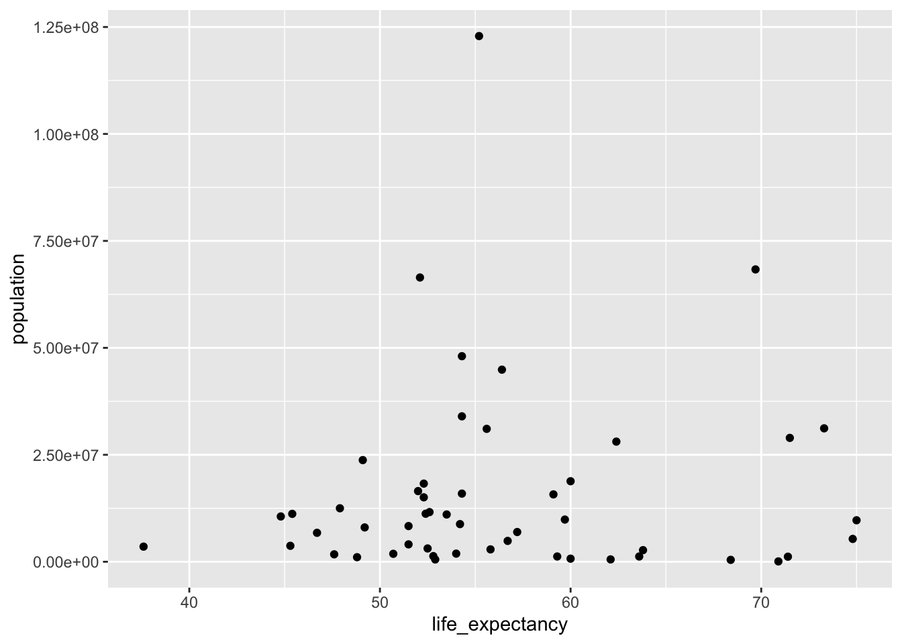
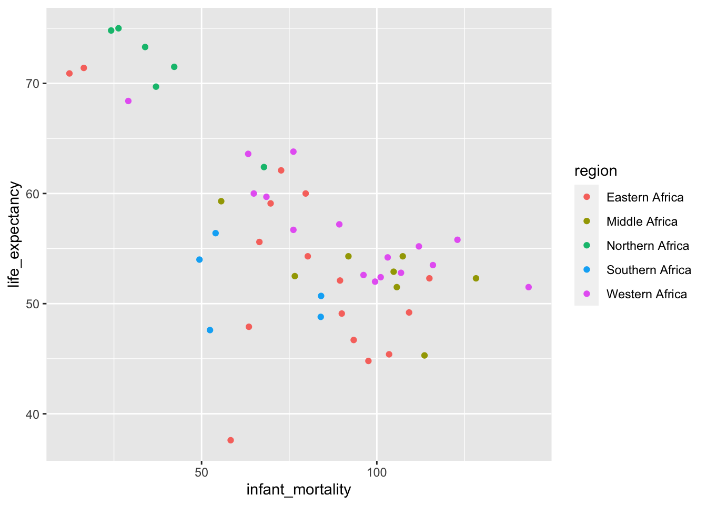

The following objects are masked from 'package:stats':
filter, lag
The following objects are masked from 'package:base':
intersect, setdiff, setequal, union
library("ggplot2")
###look at help file for gapminder data
help(gapminder)
###get an overview of data structure
str(gapminder)
'data.frame': 10545 obs. of 9 variables:
$ country : Factor w/ 185 levels "Albania","Algeria",..: 1 2 3 4 5 6 7 8 9 10 ...
$ year : int 1960 1960 1960 1960 1960 1960 1960 1960 1960 1960 ...
$ infant_mortality: num 115.4 148.2 208 NA 59.9 ...
$ life_expectancy : num 62.9 47.5 36 63 65.4 ...
$ fertility : num 6.19 7.65 7.32 4.43 3.11 4.55 4.82 3.45 2.7 5.57 ...
$ population : num 1636054 11124892 5270844 54681 20619075 ...
$ gdp : num NA 1.38e+10 NA NA 1.08e+11 ...
$ continent : Factor w/ 5 levels "Africa","Americas",..: 4 1 1 2 2 3 2 5 4 3 ...
$ region : Factor w/ 22 levels "Australia and New Zealand",..: 19 11 10 2 15 21 2 1 22 21 ...
###get a summary of data
summary(gapminder)
country year infant_mortality life_expectancy
Albania : 57 Min. :1960 Min. : 1.50 Min. :13.20
Algeria : 57 1st Qu.:1974 1st Qu.: 16.00 1st Qu.:57.50
Angola : 57 Median :1988 Median : 41.50 Median :67.54
Antigua and Barbuda: 57 Mean :1988 Mean : 55.31 Mean :64.81
Argentina : 57 3rd Qu.:2002 3rd Qu.: 85.10 3rd Qu.:73.00
Armenia : 57 Max. :2016 Max. :276.90 Max. :83.90
(Other) :10203 NA's :1453
fertility population gdp continent
Min. :0.840 Min. :3.124e+04 Min. :4.040e+07 Africa :2907
1st Qu.:2.200 1st Qu.:1.333e+06 1st Qu.:1.846e+09 Americas:2052
Median :3.750 Median :5.009e+06 Median :7.794e+09 Asia :2679
Mean :4.084 Mean :2.701e+07 Mean :1.480e+11 Europe :2223
3rd Qu.:6.000 3rd Qu.:1.523e+07 3rd Qu.:5.540e+10 Oceania : 684
Max. :9.220 Max. :1.376e+09 Max. :1.174e+13
NA's :187 NA's :185 NA's :2972
region
Western Asia :1026
Eastern Africa : 912
Western Africa : 912
Caribbean : 741
South America : 684
Southern Europe: 684
(Other) :5586
'data.frame': 2907 obs. of 9 variables:
$ country : Factor w/ 185 levels "Albania","Algeria",..: 2 3 18 22 26 27 29 31 32 33 ...
$ year : int 1960 1960 1960 1960 1960 1960 1960 1960 1960 1960 ...
$ infant_mortality: num 148 208 187 116 161 ...
$ life_expectancy : num 47.5 36 38.3 50.3 35.2 ...
$ fertility : num 7.65 7.32 6.28 6.62 6.29 6.95 5.65 6.89 5.84 6.25 ...
$ population : num 11124892 5270844 2431620 524029 4829291 ...
$ gdp : num 1.38e+10 NA 6.22e+08 1.24e+08 5.97e+08 ...
$ continent : Factor w/ 5 levels "Africa","Americas",..: 1 1 1 1 1 1 1 1 1 1 ...
$ region : Factor w/ 22 levels "Australia and New Zealand",..: 11 10 20 17 20 5 10 20 10 10 ...
###Get a summary of data
summary(africadata)
country year infant_mortality life_expectancy
Algeria : 57 Min. :1960 Min. : 11.40 Min. :13.20
Angola : 57 1st Qu.:1974 1st Qu.: 62.20 1st Qu.:48.23
Benin : 57 Median :1988 Median : 93.40 Median :53.98
Botswana : 57 Mean :1988 Mean : 95.12 Mean :54.38
Burkina Faso: 57 3rd Qu.:2002 3rd Qu.:124.70 3rd Qu.:60.10
Burundi : 57 Max. :2016 Max. :237.40 Max. :77.60
(Other) :2565 NA's :226
fertility population gdp continent
Min. :1.500 Min. : 41538 Min. :4.659e+07 Africa :2907
1st Qu.:5.160 1st Qu.: 1605232 1st Qu.:8.373e+08 Americas: 0
Median :6.160 Median : 5570982 Median :2.448e+09 Asia : 0
Mean :5.851 Mean : 12235961 Mean :9.346e+09 Europe : 0
3rd Qu.:6.860 3rd Qu.: 13888152 3rd Qu.:6.552e+09 Oceania : 0
Max. :8.450 Max. :182201962 Max. :1.935e+11
NA's :51 NA's :51 NA's :637
region
Eastern Africa :912
Western Africa :912
Middle Africa :456
Northern Africa :342
Southern Africa :285
Australia and New Zealand: 0
(Other) : 0
Create a new object from africa data with only infant_mortality and life_expectancy
africadata_v1 <- africadata[,3:4]
###Get an overview of data structure
str(africadata_v1)
'data.frame': 2907 obs. of 2 variables:
$ infant_mortality: num 148 208 187 116 161 ...
$ life_expectancy : num 47.5 36 38.3 50.3 35.2 ...
Get summary of data
summary(africadata_v1)
infant_mortality life_expectancy
Min. : 11.40 Min. :13.20
1st Qu.: 62.20 1st Qu.:48.23
Median : 93.40 Median :53.98
Mean : 95.12 Mean :54.38
3rd Qu.:124.70 3rd Qu.:60.10
Max. :237.40 Max. :77.60
NA's :226
View(africadata) ### Create another object from africadata with only population and life expectancy
africadata_v2 <- africadata[,c(4,6)]
Get an overview of data structure
str(africadata_v2)
'data.frame': 2907 obs. of 2 variables:
$ life_expectancy: num 47.5 36 38.3 50.3 35.2 ...
$ population : num 11124892 5270844 2431620 524029 4829291 ...
Summary of data
summary(africadata_v2)
life_expectancy population
Min. :13.20 Min. : 41538
1st Qu.:48.23 1st Qu.: 1605232
Median :53.98 Median : 5570982
Mean :54.38 Mean : 12235961
3rd Qu.:60.10 3rd Qu.: 13888152
Max. :77.60 Max. :182201962
NA's :51
Plot infant mortality and life expectancy
ggplot(africadata_v1, aes(x=life_expectancy, y = infant_mortality)) +geom_point()
'data.frame': 51 obs. of 9 variables:
$ country : Factor w/ 185 levels "Albania","Algeria",..: 2 3 18 22 26 27 29 31 32 33 ...
$ year : int 2000 2000 2000 2000 2000 2000 2000 2000 2000 2000 ...
$ infant_mortality: num 33.9 128.3 89.3 52.4 96.2 ...
$ life_expectancy : num 73.3 52.3 57.2 47.6 52.6 46.7 54.3 68.4 45.3 51.5 ...
$ fertility : num 2.51 6.84 5.98 3.41 6.59 7.06 5.62 3.7 5.45 7.35 ...
$ population : num 31183658 15058638 6949366 1736579 11607944 ...
$ gdp : num 5.48e+10 9.13e+09 2.25e+09 5.63e+09 2.61e+09 ...
$ continent : Factor w/ 5 levels "Africa","Americas",..: 1 1 1 1 1 1 1 1 1 1 ...
$ region : Factor w/ 22 levels "Australia and New Zealand",..: 11 10 20 17 20 5 10 20 10 10 ...
Get a summary of the data
summary(africadata_2000)
country year infant_mortality life_expectancy
Algeria : 1 Min. :2000 Min. : 12.30 Min. :37.60
Angola : 1 1st Qu.:2000 1st Qu.: 60.80 1st Qu.:51.75
Benin : 1 Median :2000 Median : 80.30 Median :54.30
Botswana : 1 Mean :2000 Mean : 78.93 Mean :56.36
Burkina Faso: 1 3rd Qu.:2000 3rd Qu.:103.30 3rd Qu.:60.00
Burundi : 1 Max. :2000 Max. :143.30 Max. :75.00
(Other) :45
fertility population gdp continent
Min. :1.990 Min. : 81154 Min. :2.019e+08 Africa :51
1st Qu.:4.150 1st Qu.: 2304687 1st Qu.:1.274e+09 Americas: 0
Median :5.550 Median : 8799165 Median :3.238e+09 Asia : 0
Mean :5.156 Mean : 15659800 Mean :1.155e+10 Europe : 0
3rd Qu.:5.960 3rd Qu.: 17391242 3rd Qu.:8.654e+09 Oceania : 0
Max. :7.730 Max. :122876723 Max. :1.329e+11
region
Eastern Africa :16
Western Africa :16
Middle Africa : 8
Northern Africa : 6
Southern Africa : 5
Australia and New Zealand: 0
(Other) : 0
Ploting life expectancy and infant mortality for the year 2000
ggplot(africadata_2000, aes(x=life_expectancy, y = infant_mortality)) +geom_point()
Ploting life expectancy and population size for the year 2000
ggplot(africadata_2000, aes(x=life_expectancy, y = population)) +geom_point()

Fitting a linear regression: using infant mortality as a predictor
fit1 <-lm(life_expectancy ~ infant_mortality, data = africadata_2000)
Print result
summary(fit1)
Call:
lm(formula = life_expectancy ~ infant_mortality, data = africadata_2000)
Residuals:
Min 1Q Median 3Q Max
-22.6651 -3.7087 0.9914 4.0408 8.6817
Coefficients:
Estimate Std. Error t value Pr(>|t|)
(Intercept) 71.29331 2.42611 29.386 < 2e-16 ***
infant_mortality -0.18916 0.02869 -6.594 2.83e-08 ***
---
Signif. codes: 0 '***' 0.001 '**' 0.01 '*' 0.05 '.' 0.1 ' ' 1
Residual standard error: 6.221 on 49 degrees of freedom
Multiple R-squared: 0.4701, Adjusted R-squared: 0.4593
F-statistic: 43.48 on 1 and 49 DF, p-value: 2.826e-08
Using population size as a predictor
fit2 <-lm(life_expectancy ~ population, data = africadata_2000)
###Print result
summary(fit2)
Call:
lm(formula = life_expectancy ~ population, data = africadata_2000)
Residuals:
Min 1Q Median 3Q Max
-18.429 -4.602 -2.568 3.800 18.802
Coefficients:
Estimate Std. Error t value Pr(>|t|)
(Intercept) 5.593e+01 1.468e+00 38.097 <2e-16 ***
population 2.756e-08 5.459e-08 0.505 0.616
---
Signif. codes: 0 '***' 0.001 '**' 0.01 '*' 0.05 '.' 0.1 ' ' 1
Residual standard error: 8.524 on 49 degrees of freedom
Multiple R-squared: 0.005176, Adjusted R-squared: -0.01513
F-statistic: 0.2549 on 1 and 49 DF, p-value: 0.6159
Kelly Hatfields Contributions
This section is added by Kelly Hatfield.
Assessing the Impact of region in the relationship between life expectancy and mortality in year 2000
First, we will recreate the visualization of the Africa data in 2000 but adding in color to differentiate the differences in region.
#load packageslibrary(dslabs) library("dplyr") library("ggplot2") africadata <- gapminder %>%filter(continent =="Africa")#reset africa dataset for year 2000 onlyafricadata_2000 =subset(africadata, year==2000)#More Plotting #Infant Mortality and Life Expectancy in 2000;ggplot(africadata_2000, aes(x=infant_mortality, y=life_expectancy, color=region)) +geom_point()

Next we will run a simple linear regression model to assess the mean life expectancy in each of the regions
#Box Plots of Life Expectancy by Region for the years 2000;box=ggplot(africadata_2000, aes(x=region, y=life_expectancy, color=region)) +geom_boxplot()box +geom_jitter(shape=16, position=position_jitter(0.2))
#Simple linear regression model for year 2000; fit3 =lm (life_expectancy~factor(region), data=africadata_2000)summary(fit3)
Call:
lm(formula = life_expectancy ~ factor(region), data = africadata_2000)
Residuals:
Min 1Q Median 3Q Max
-16.056 -4.138 -0.500 3.013 17.744
Coefficients:
Estimate Std. Error t value Pr(>|t|)
(Intercept) 53.6563 1.6203 33.115 < 2e-16 ***
factor(region)Middle Africa -0.8562 2.8065 -0.305 0.762
factor(region)Northern Africa 17.4604 3.1026 5.628 1.04e-06 ***
factor(region)Southern Africa -2.1563 3.3206 -0.649 0.519
factor(region)Western Africa 3.1812 2.2915 1.388 0.172
---
Signif. codes: 0 '***' 0.001 '**' 0.01 '*' 0.05 '.' 0.1 ' ' 1
Residual standard error: 6.481 on 46 degrees of freedom
Multiple R-squared: 0.4601, Adjusted R-squared: 0.4131
F-statistic: 9.8 on 4 and 46 DF, p-value: 8.074e-06
This shows us that there are significant variability in the mean life expectancy by region in the year 2000.
Next, we will assess region and infant mortality in the same model.
Call:
lm(formula = life_expectancy ~ infant_mortality + factor(region),
data = africadata_2000)
Residuals:
Min 1Q Median 3Q Max
-19.1675 -2.4682 0.6053 2.2362 7.8495
Coefficients:
Estimate Std. Error t value Pr(>|t|)
(Intercept) 66.95785 2.36426 28.321 < 2e-16 ***
infant_mortality -0.17479 0.02694 -6.488 5.87e-08 ***
factor(region)Middle Africa 2.96949 2.12310 1.399 0.16877
factor(region)Northern Africa 10.89992 2.47117 4.411 6.35e-05 ***
factor(region)Southern Africa -4.13489 2.43244 -1.700 0.09605 .
factor(region)Western Africa 5.92329 1.71809 3.448 0.00124 **
---
Signif. codes: 0 '***' 0.001 '**' 0.01 '*' 0.05 '.' 0.1 ' ' 1
Residual standard error: 4.71 on 45 degrees of freedom
Multiple R-squared: 0.721, Adjusted R-squared: 0.6901
F-statistic: 23.26 on 5 and 45 DF, p-value: 1.828e-11
From this model we can interpret that when adjusting for region in Africa, infant mortality is still linearly associated with life expectancy (p<0.001). The parameter estimate tells us that for each one-unit increase in infant mortality life expectancy declines by 0.18 years.